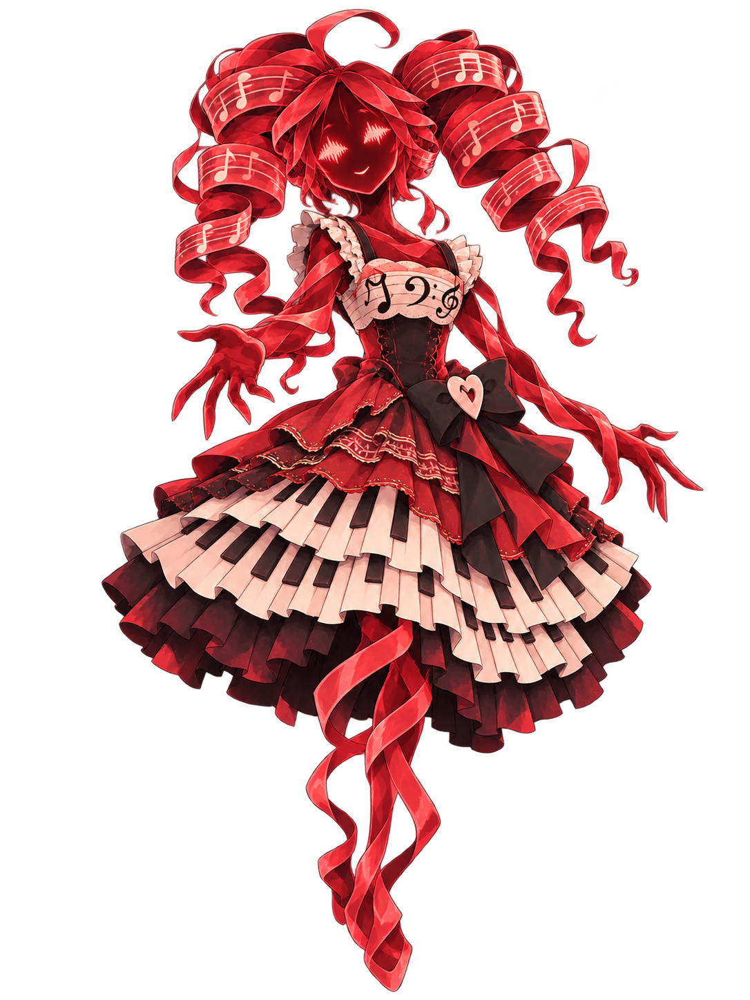
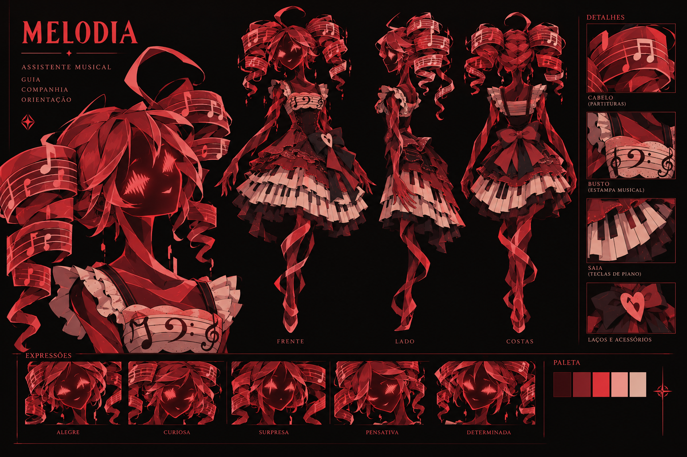
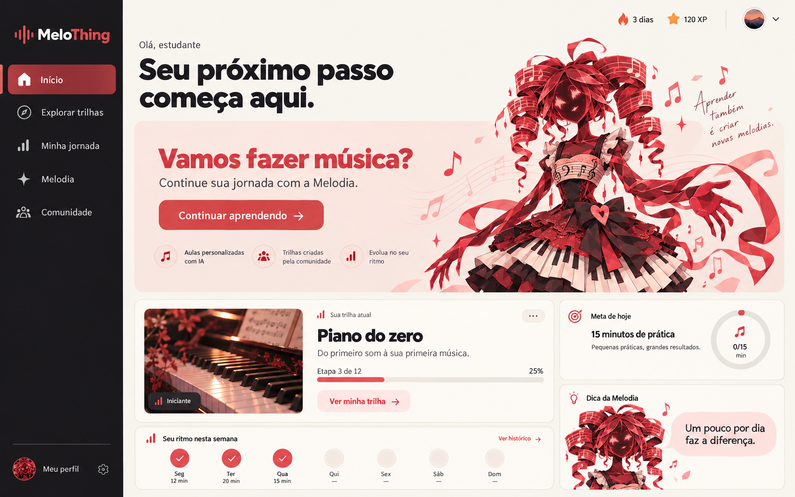

MELOTHING APRESENTA
Aprender música.
Encontrar seu ritmo.
Com a Melodia.
Uma presença feita de som para acompanhar suas descobertas. Conheça a assistente que transforma dúvidas em novos passos na sua jornada musical.
começa com uma conversa.


A identidade visual que dá forma à nossa assistente.
01 / A PERSONAGEM
Ela não tem idade.
Tem música.
A Melodia personifica o que conecta todo o MeloThing: a música. Seu corpo e suas expressões surgem de ondas sonoras vermelhas. Os cabelos são partituras em movimento; o vestido carrega a delicadeza da moda clássica e as teclas de um piano.
Na conversa, ela é amigável, curiosa e acolhedora. Explica com palavras simples, propõe um próximo passo e respeita o tempo de quem está aprendendo.
- ESSÊNCIA
- Uma presença feita de som
- TOM DE VOZ
- Amigável e encorajador
- SEU PAPEL
- Orientar suas descobertas
- JEITO DE ENSINAR
- Uma dica, depois uma tentativa
02 / CINCO FORMAS DE AJUDAR
Uma boa companhia.
Muitas descobertas.
Do primeiro “por onde começo?” à próxima etapa da trilha, a Melodia ajuda você a construir o próprio conhecimento.
03 / UMA CONVERSA MUDA O COMPASSO
Pode perguntar.
Ela acompanha.
Escolha uma situação e percorra a conversa. Você pode usar as sugestões ou escrever sua resposta.
Demonstração com respostas preparadasConversa simulada · Sem envio ou armazenamento de dados
04 / DENTRO DO MELOTHING
Cada etapa,
um novo som.
O MeloThing organiza o aprendizado de instrumentos e produção musical em trilhas progressivas. A Melodia acompanha essa experiência com explicações e orientação.
Conteúdos oficiais e trilhas da comunidade abrem espaço para aprender, ensinar e compartilhar conhecimento.
Exemplo ilustrativo de progresso. Nenhuma conta é necessária.
05 / A EXPERIÊNCIA EM CINCO TELAS
Uma ideia que
já ganha forma.
Os mockups que orientam o protótipo: uma interface simples, com ações claras e a Melodia por perto.
MeloThing / Início

Retome seus estudos, acompanhe seu ritmo e encontre o próximo passo com a Melodia.
REFERÊNCIA VISUAL · GERADA POR IA06 / DA IDEIA AO PROTÓTIPO
Uma personagem.
Um projeto por trás.
A experiência parte do escopo, dos casos de uso e da modelagem de dados do MeloThing. Aqui está o que sustenta esta primeira versão.
Apoiar quem está
aprendendo música.
A Melodia orienta a escolha de trilhas, esclarece conceitos e acompanha a prática. A atividade e a descoberta permanecem com o estudante.
O limite faz parte da personalidade. Quando alguém pede uma resposta pronta, ela oferece pistas e convida a tentar.
Arquitetura e tecnologias
Nesta versão: HTML, CSS e JavaScript. Interface responsiva, cinco fluxos com estados e decisões, e uma atividade de pulsação com áudio gerado no navegador.
Próxima etapa: serviço de aplicação para conectar a IA com segurança, aplicar as regras pedagógicas e consultar dados reais mediante autenticação.
Casos de uso e dados
Estudante: escolher trilhas, realizar atividades, consultar a IA e acompanhar o progresso. Criador: organizar e publicar trilhas mediante autorização. Administrador: gerenciar e moderar conteúdos.
A modelagem relaciona usuários, trilhas, etapas, conteúdos, exercícios, matrículas, progresso e interações com a IA. No protótipo, os exemplos são locais e ilustrativos.
Referências: RF03–RF08 e RN03, RN04, RN08 e RN10 do documento-base.
O que você pode demonstrar
- A identidade e a descrição da Melodia.
- A imagem da personagem, criada com IA.
- A navegação, os cinco fluxos e a prática de pulsação.
- A apresentação guiada do chatbot.
- Os fluxos completos e a documentação técnica.
A integração com IA generativa está prevista para a próxima versão. O chat atual simula o comportamento da assistente.

O PRÓXIMO PASSO É SEU